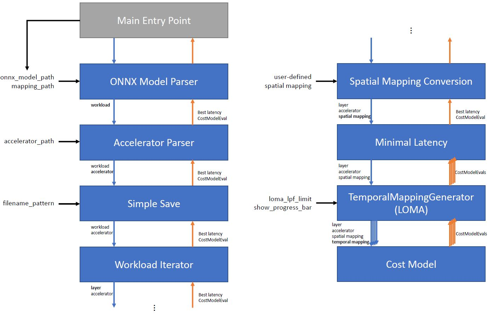

Stages¶
This document explains the concept of stages within the ZigZag framework. It details the different implemented stages and explains how to create your own.
Introduction¶
Stages within ZigZag are used to modularly and easily adapt the functionality of the framework. The different stages and their sequence of execution determine the goal of running the framework. The sequence of stages the framework will run through are defined in the main file. An example as follows:
mainstage = MainStage([ # Initializes the MainStage as entry point
ONNXModelParserStage, # Parses the ONNX Model into the workload
AcceleratorParserStage, # Parses the accelerator
SimpleSaveStage, # Saves all received CMEs information to a json
WorkloadStage, # Iterates through the different layers in the workload
SpatialMappingGeneratorStage, # Generates multiple spatial mappings (SM)
MinimalLatencyStage, # Reduces all CMEs, returning minimal latency one
LomaStage, # Generates multiple temporal mappings (TM)
CostModelStage # Evaluates generated SM and TM through cost model
],
accelerator_path=args.accelerator, # required by AcceleratorParserStage
onnx_model_path=args.model, # required by ONNXModelParserStage
mapping_path=args.mapping, # required by ONNXModelParserStage
filename_pattern="outputs/{datetime}.json", # output file save pattern
loma_lpf_limit=6, # required by LomaStage
loma_show_progress_bar=True, # shows a progress bar while iterating over temporal mappings
# Run the mainstage
mainstage.run()
This corresponds to the following hierarchy:
{kind=link}
The main entry point¶
You can think of stages similar to those in a pipelined system. The MainStage provides an entry point for the framework to start execution from. All stages save the provided first argument as the sequence of remaining stages, of which the first one will be called when running said stage. In our example, the MainStage will automatically call the ONNXModelParserStage with the remaining stages [AcceleratorParserStage, SimpleSaveStage, ...] as its first argument. Besides the sequence of stages, the remaining arguments (e.g. accelerator_path, onnx_model_path, …) of the MainStage initialization are arguments required by one or more of the later stages.
The sequential call of stages¶
After the MainStage initialization, the remaining stages are called in an sequential order. The ONNXModelParserStage will call the AcceleratorParserStage, and so on.
The ONNXModelParserStage parses the ONNX model into the workload and the AcceleratorParserStage parses the accelerator based on the hardware architecture description. After this, the SimpleSaveStage is called, which will save the results of the design space exploration in a file in a later step. Further description about this step can be found in back-passing-label.
The WorkloadStage iterates through each layer in the parsed workload, and for each layer it finds spatial mappings (SM) in the SpatialMappingGeneratorStage. The temporal mapping generator stage below (LomaStage) generates multiple temporal mappings (TM), and each SM + TM combination is fed to the cost model for HW cost evaluation.
The back passing of results¶
So far, we have only discussed the sequential calling of stages from first to last. The reverse also holds true: when the CostModelStage finishes processing a SM + TM conbimation, it yields a CostModelEvaluation (CME) object back up the chain of stages. Some stages will simply pass this CME further up the chain, while others manipulate what is passed back up the chain. The MinimalLatencyStage for example, receives all the CMEs from the multiple cost model invocations for different TMs, but only passes the CME with the lowest latency back up the chain across all TMs. As such, the SimpleSaveStage only receives the CME with the lowest latency, which it will save to a file with the filename_pattern pattern.
Implemented stages¶
This section is still being updated. For a missing description, please look at the stages requirements in __init__.py and the stage implementation in the stages folder.
Input parser stages¶
AcceleratorParserStage: Parse the accelerator description from the inputs.
WorkloadParserStage: Parse the input workload residing in workload_path. Used when workload is defined manually by the user.
ONNXModelParserStage: Parse the input workload residing in onnx_model_path. Used when workload is defined through a ONNX model.
Iterator stage¶
GeneralParameterIteratorStage: General iterator over any parameter whose values can be set from a predetermined list
WorkloadStage: Class that iterates through the nodes in a given workload graph.
Plot stages¶
PlotTemporalMappingsStage: Class that passes through all results yielded by substages, but keeps the TMs cme’s and saves a plot.
Reduce stages¶
MinimalEnergyStage: Class that keeps yields only the cost model evaluation that has minimal energy of all cost model evaluations generated by it’s substages created by list_of_callables
MinimalLatencyStage: Class that keeps yields only the cost model evaluation that has minimal latency of all cost model evaluations generated by it’s substages created by list_of_callables
MinimalEDPStage: Class that keeps yields only the cost model evaluation that has minimal EDP of all cost model evaluations generated by it’s substages created by list_of_callables
SumStage: Class that keeps yields only the sum of all cost model evaluations generated by its substages created by list_of_callables
ListifyStage: Class yields all the cost model evaluations yielded by its substages as a single list instead of as a generator.
Optimization stages¶
RemoveExtraInfoStage: Strips extra info for subcallables to save memory
CacheBeforeYieldStage: Caches results in a list and then yields them. This breaks the yield flow from top to bottom.
SkipIfDumpExistsStage: Check if the output file is already generated, skip the run if so.
MultiProcessingSpawnStage: Multiprocessing support stage.
MultiProcessingGatherStage: Multiprocessing support stage.
Save and dump stages¶
CompleteSaveStage: Class that passes through all results yielded by substages, but saves the results as a json list to a file at the end of the iteration.
SimpleSaveStage: Class that passes through results yielded by substages, but saves the results as a json list to a file at the end of the iteration. In this simple version, only the energy total and latency total are saved.
PickleSaveStage: Class that dumps all received CMEs into a list and saves that list to a pickle file.
DumpStage: Class that passes through all results yielded by substages, but dumps the results as a pickled list to a file at the end of the iteration
Temporal mapping stages¶
LomaStage: Class that iterates through the different temporal mappings generated through the loop order based memory allocation (loma) engine
SalsaStage: Class that return the best temporal mapping found by the Simulated Annealing Loop-ordering Scheduler for Accelerators (SALSA) for a single layer.
TemporalOrderingConversionStage: Run this stage by converting the user-defined temporal loop ordering to the memory-level based temporal mapping representation.
Spatial mapping stages¶
SpatialMappingConversionStage: Pipeline stage that converts the spatial mapping from user-provided spatial mapping across operational array dimensions to the internal spatial mapping representation used in the cost model.
SpatialMappingGeneratorStage: Pipeline stage that finds spatial mappings given a accelerator, core allocation, interconnection pattern on the allocated core and a layer. The spatial mappings are found using the interconnection pattern present on the core. The inner-most memory level served dimensions is used, as this is how the memories connect to the operational array.
Cost model stages¶
CostModelStage: Pipeline stage that calls a cost model to evaluate a (temporal and spatial) mapping on a HW config.
Hardware modification stages¶
SearchInterLayerDataLocalityStage: Class that iterates through the memory instances and return the lowest allowed memory level for each operand for the usage of the next layer. The class must be placed before the WorkloadStage. The parameter workload_data_always_from_top_mem is False by default, which means the initial input and final output of the entire workload can be from a memory level lower than the highest memory level. You can set it to True if the initial input data and final output of the entire workload must travel from/to the highest memory level.
ExploitInterLayerDataLocalityStage: Class that remove the unused memory instances according to the result of SearchInterLayerDataLocalityStage. Each memory instance with a level higher than the level returned from SearchInterLayerDataLocalityStage will be considered as an unused memory and will be removed. This stage must be placed after the WorkloadStage.
Creating your custom stage¶
Let’s say you are not interested in saving the CME with minimal energy, but want to save based on another metric provided by the CME, or you want to define a new temporal mapping generator stage, you can easily create a custom stage. The easiest way is copying an existing stage class definition, and modifying it according to your intended behaviour. To guarantee correctness, following aspects have to be taken into account when creating a custom stage:
It must inherit from the abstract
Stageclass.It must create its
substageas the first element of the list of callables, with the remaining list as its first argument, and**kwargsas the second argument. These kwargs can be updated to change e.g. the accelerator, spatial mapping, temporal mapping, etc.It must iterate over the different
(CME, extra_info)tuples yielded by thesubstage.run()call in a for loop.If the stage is a reduction (like e.g. the
MinimalLatencyStage), itsyieldstatement must be outside the for loop which iterates over the returned(CME, extra_info)tuples, where some processing happens inside the for loop.